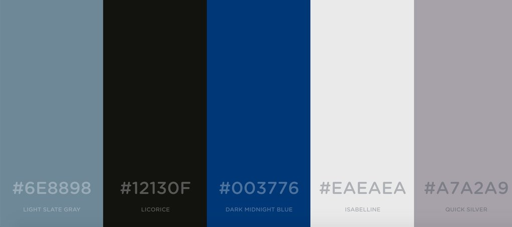
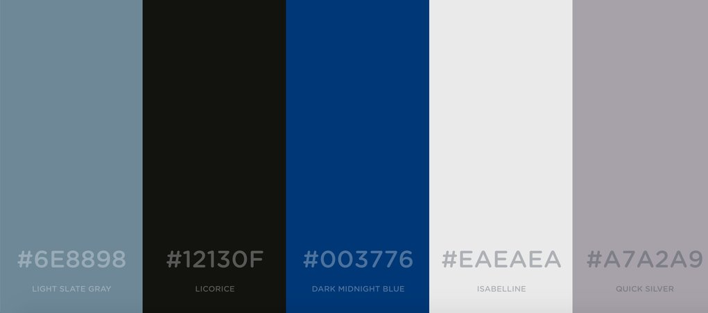

Color Scheme
Here are the colors I will be using for the site. For the header and footer I will be using 003776 and A7A2A9. Instead of a white page it will be EAEAEA with the typography in 1213OF. 6E8898 will be for links.
Here are the colors I will be using for the site. For the header and footer I will be using 003776 and A7A2A9. Instead of a white page it will be EAEAEA with the typography in 1213OF. 6E8898 will be for links.
